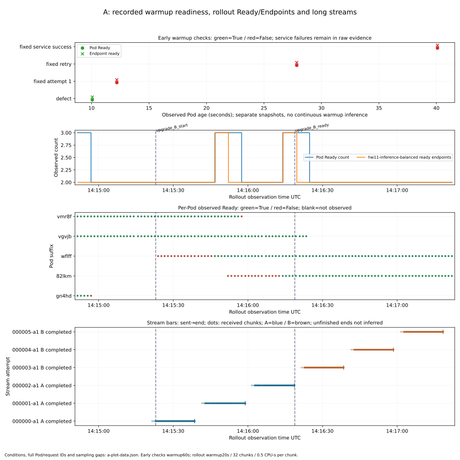
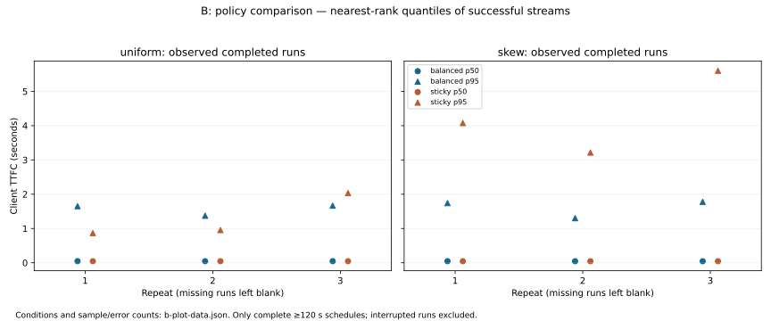
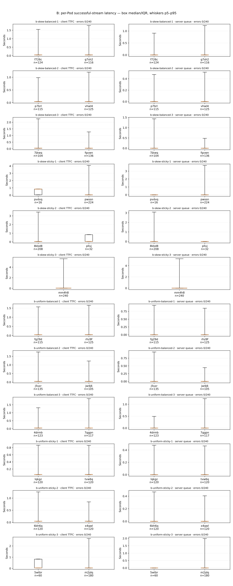
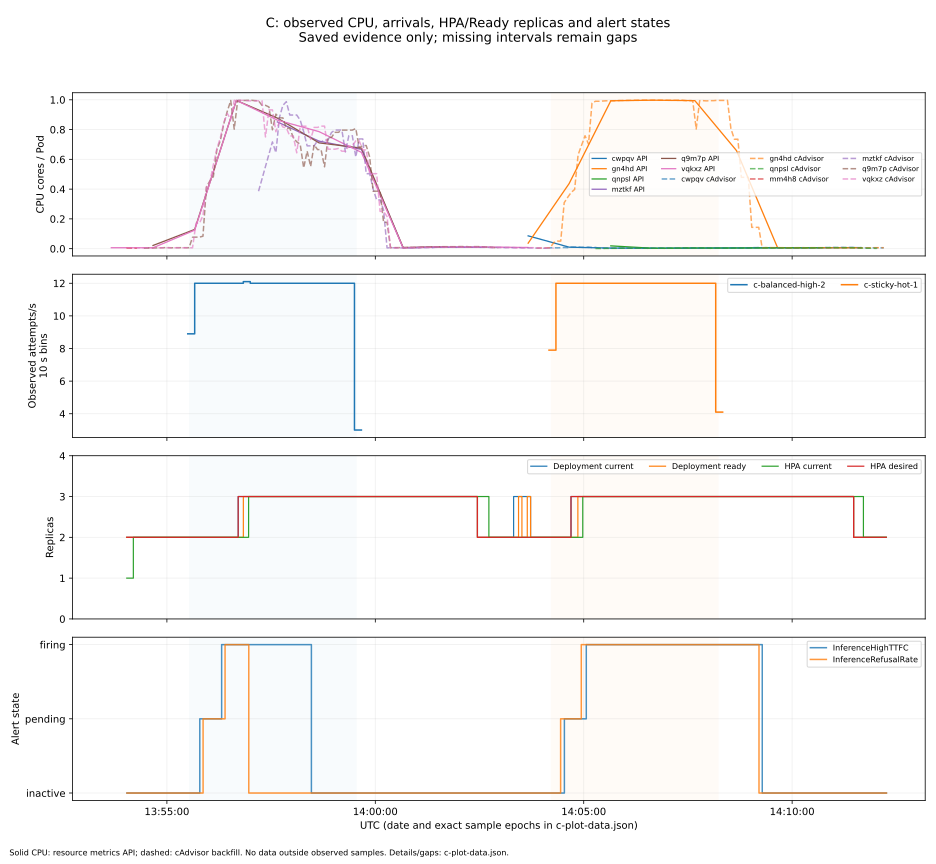

МГТУ · MLOps · 17 ноября 2026 · промежуточный отчёт
Сервис работает, пользователи ждут
Статус: работа не завершена. Ниже описаны сохранённые данные стенда, пилот, прогрев, сравнение политик B и HPA/алерты C. B завершён по 12 прогонам; C содержит два измеренных цикла HPA и оба алерта. Сохранены rollout, rollback, forced kill и drain A; итоговые Service-проверки версии, замены Pod и изоляции завершены успешно. Связь кейса с отсутствующей lecture11 остаётся неподтверждённой. Этот документ не утверждает выполнение всех условий сдачи. Срез доказательств: файлы пилота, прогрева, завершённые B и C, перечисленные ниже; появление новых файлов не обновляет выводы автоматически.
Основание: план. Исходный файл задания homework11.html недоступен в текущем составе материалов. Используется продолжение CPU API ДЗ 8–10 с backend_mode=simulated. Это управляемый вычислительный имитатор и имитация префиксного кеша; числа не являются характеристиками настоящей языковой модели. Измеряются TTFC и inter-chunk latency, а не TTFT, TPOT или tokens/s.
1. Стенд и воспроизводимость
| Параметр | Сохранённое значение | Доказательство |
|---|---|---|
| Kubernetes / архитектура | server v1.31.0, linux/arm64; kubectl v1.31.3 | version |
| Инструменты | minikube v1.34.0; Helm v3.16.4; Docker 28.5.1 | minikube, Helm, Docker |
| Контейнерное окружение | 8 CPU, 6 213 242 880 байт RAM по Docker info | Снимок окружения |
| API | 2 реплики; image hw11-service:local; requests 250m CPU / 96Mi, limits 1 CPU / 256Mi на контейнер | Фактические Helm values, Pod и imageID |
| Имитатор | Прогрев 20 с; maxParallel=1; очередь 32, тайм-аут 10 с; кеш 64 записи, префикс 512 символов; hit 0,02 CPU-с, miss 0,8 CPU-с; 8 частей, 0,02 CPU-с на часть | Снимок исходной конфигурации |
| Мониторинг | Prometheus v3.1.0; Grafana 11.5.0; kube-state-metrics v2.14.0 | Развёрнутый manifest, дашборд, targets |
Версия A хранится в небольшом артефакте ConfigMap и проверяется по SHA-256. В пилотных ответах загружен хеш 3be60248867b330e3ed7c93b080dacda0485dabd2e108094bff17d4b1bead14f. Тег local не является неизменяемым digest; для проверки конкретных байтов образа сохранены imageID в Pod. История передаётся в запросе; локальный кеш не должен служить единственным хранилищем диалога.
До minikube наблюдалось 45 GiB свободного места хоста по df. Это запись рабочего ledger .superpowers/sdd/2026-11-17-homework11/progress.md (игнорируется git), а не приложенный raw snapshot df. Сопоставимого сохранённого docker disk-before нет, поэтому точный прирост диска не вычисляется. Снимок файловой системы кластера: 453G всего, 24G занято, 406G доступно. Docker после развёртывания показывает 17,97 GB образов, 3,256 GB томов и 723,4 MB build cache. Это совокупный объём окружения, не размер только ДЗ 11 и не прирост относительно исходного состояния. Для точной оценки прироста нужен сопоставимый снимок до запуска. Источники: df, docker system df. Настроены retention Prometheus 2 часа / 256 MB и ограниченные emptyDir; данные следует экспортировать до удаления.
Полные команды сборки, запуска, получения метрик и удаления: DEPLOYMENT.md. Команда запуска закреплена на фактически проверенных minikube v1.34.0 / Kubernetes v1.31.0; Docker inspect подтверждает лимиты профиля hw11: 4 CPU / 4 GiB. Фактические значения конкретного опыта берутся из его сохранённой конфигурации. Удаление собственного стенда: helm uninstall hw11 -n hw11, kubectl delete namespace hw11, minikube delete -p hw11. Нельзя удалять чужие компоненты общего кластера.
Оценка собственного стенда после опытов: CPU API image — 163 901 359 байт (156,31 MiB); выделенный том hw11 /var по du -skx — 2 336 192 KiB (≈2,228 GiB); базовый kicbase v0.0.45 — ≈1,106 GiB, writable layer профиля — ≈2,83 MiB. Грубая сумма этих неповторяющихся категорий — ≈3,337 GiB; образ API уже входит в том и повторно не добавляется. Это оценка состава профиля, не уникального физического потребления диска: shared layers, Docker VM/sparse storage и метаданные мешают отождествлять сумму с освобождаемым местом. Read-only команды, точные байты, ID и время сохранены в size-inspection.json; подробный разбор — инструкция. Внутренние 1,662 GB Docker images и 64,83 MB writable layers профиля перекрываются с томом /var и к сумме не прибавляются.
2. Метод измерения и пилот
Генератор сохраняет расписание и SHA-256 его байтов, плановое и фактическое время отправки, каждую попытку, часть потока и терминальный исход. Длительности считаются монотонными часами клиента. TTFC = время первой содержательной части − фактическое время отправки; total = конец попытки − отправка; inter-chunk = разность времён двух последовательных частей. Ошибки, timeout и незавершённый поток учитываются отдельно от успешных перцентилей. Повторы должны иметь отдельный номер попытки.
Пилот: обычный Service, четыре клиента с IP 10.244.0.10–13, keep-alive выключен, timeout 60 с, workers 128, retries 0. Расписание содержит 10 запросов с шагом 1 с; это проверка пути измерения, не 120-секундное сравнение политик. По журналу: 10 попыток, 10 завершённых HTTP 200, 80 частей; отказов, timeout и незавершённых потоков нет в этом маленьком наборе. Распределение: Pod …qpd7r — 6, …q6jzv — 4.
| Успешные ответы, n=10 | p50, с | p95, с |
|---|---|---|
| TTFC | 0,8280 | 0,8865 |
| Полная длительность | 0,9708 | 1,0295 |
Здесь p50 — медиана, p95 — ближайший ранг ceil(0,95n), то есть максимум при n=10. Медиана задержки отправки относительно расписания 0,000913 с, максимум 0,009773 с. Малый объём не позволяет переносить эти числа на устойчивую нагрузку. Доказательства: сырые события, расписание, manifest клиентов, Pod клиентов.
3. Опыт A: преждевременная готовность
Фактический прогрев в описанных проверках A — 60 секунд. Значение 20 с в таблице стенда относится к исходному снимку Helm values и не является настройкой этих проверок прогрева.
Гипотеза: успешный запуск HTTP-процесса не означает готовность backend. В дефектном режиме проверки могут допустить непрогретый Pod к рабочему трафику. Исправление должно связывать startup/readiness с окончанием загрузки и прогрева, сохраняя отдельную проверку живости. Назначения probes описаны в документации Kubernetes.
| Этап | Наблюдение | Доказательство |
|---|---|---|
| Исходный дефект | Pod …4v8rl имеет Ready=True и endpoint ready=true. Запрос возвращает HTTP 503 «Loading, warming up or draining» с идентификатором того же Pod. | Pod / EndpointSlice, ответ, журнал |
| После изменения | Pod …4hv98: Ready=False. Прямые readiness и рабочий запрос к его IP дают 503 во время прогрева. Однако проверка через Service завершается HTTP 503, код команды 1. | первый повтор |
| Неудачный повтор | Прямая проверка непрогретого Pod успешна как отрицательный тест; проверка Service снова получает 503 и код команды 1. Этот результат сохранён, а не засчитан как исправление. | повтор |
| Успешная проверка Service | Новый Pod всё ещё Ready=False, endpoint ready=false / serving=false. Через Service завершается ответ A от старого Pod …w8mq8, а прямой запрос к новому остаётся 503. | успешный повтор |
Причина и предел вывода. Дефектные probes сообщали готовность до готовности backend; исправленные исключают проверяемый новый Pod из готовых endpoints. В успешном повторе обслуживает уже готовая старая реплика. Два предыдущих 503 через Service нельзя скрывать: во время смешанного rollout ещё существовали старые Pod дефектной конфигурации. Снимки подтверждают это сосуществование, но сами по себе не устанавливают Pod-источник каждого неудачного service-запроса. Снимок Ready и последующий HTTP-запрос также не атомарны.
Штатный rollout A→B, неготовая B и откат
Отдельные подопыты выпуска выполнялись после C с прогревом 20 с, HPA выключен, две реплики, 32 части ×0,5 CPU-с на часть, grace=120 с / preStop=5 с. Это отличается от ранних проверок прогрева с 60 с и от B/C с 5 с. В каждой фазе четыре клиентских Pod/IP, 6 запросов по расписанию за 120 с (0,05/с), timeout=60 с, retries=0. Вывод о нулевых сбоях ограничен этими небольшими прогонами. Сводка с первичными путями: a_findings.md.
| Фаза / сырые запросы | Начато / завершено | HTTP 5xx / incomplete | Фактическая версия |
|---|---|---|---|
| A→B | 6 / 6 complete | 0 / 0 | A:3; B:3 |
| Неготовая B, rollback | 6 / 6 complete | 0 / 0 | A:6 |
| Неудавшаяся exec-инъекция | 6 / 6 complete | 0 / 0 | A:6; остановка не доказана |
| Runtime SIGKILL | 6 / 5 complete + 1 aborted | 0 / 1 | A:6 |
| Graceful delete | 6 / 6 complete | 0 / 0 | A:6 |
Все пять фаз содержат по четыре run_end и не имеют attempt_start без attempt_end. Runtime-обрыв начинался с HTTP 200: отсутствие 5xx само по себе не означает успешный поток. Его терминальный исход и отсутствие complete учитываются отдельно.
В A→B первый chunk A для r000000 получен 14:15:22,872 UTC; upgrade стартовал 14:15:22,948; тот же поток того же Pod завершился 14:15:38,591. Следовательно, активный поток действительно пересекает начало rollout. Команда ожидания готовности B закончилась 14:16:18,865. Сохранены маркеры, команды и ссылки stdout/stderr, Ready/EndpointSlice. Само пересечение не доказывает drain удаляемого активного Pod; для этого выполнен отдельный graceful delete ниже.
Заведомо неготовая B …nqjzb (10.244.0.126) оставалась Ready=False; в 29 снимках EndpointSlice ready=false/serving=false, включая terminating. Две A сохраняли готовность, ответов B нет. Rollback к Helm revision 9 выполнялся 14:19:33,863–14:19:34,520 UTC. Все четыре запроса, начавшиеся после rollback_ready, завершились с фактически загруженной A. Анализ, наблюдения, маркеры отката. Это подтверждение исключения этой B в наблюдённом интервале, а не универсальная гарантия отсутствия любых race conditions.
Принудительный отказ и отдельный graceful drain
Первая попытка SIGKILL PID 1 из того же namespace вернула код команды 0, но контейнер не остановился: restartCount=0, Ready=True, previous container отсутствовал. Она сохранена в a-real-kill и не засчитана как принудительный отказ. Повтор сделан через runtime: docker exec hw11 docker kill --signal=KILL EXACT_CONTAINER_ID по конкретному ID, не по общему шаблону.
В 14:24:45 старый контейнер завершился exit 137/Error; появился новый контейнер, restartCount=1 при прежнем UID Pod 06e3a69f-8b14-4562-a85a-f318ec9c6a22. Активный r000000 получил одну часть, затем EOF без complete: aborted/incomplete, HTTP 200, total≈0,969 с. Пять последующих попыток успешны, повторов нет. Ready transition False 14:24:45 → True 14:25:06 (21 с); EndpointSlice наблюдался ready=false 14:24:46,986 → true 14:25:07,020. Источники: анализ forced kill, Pod/EndpointSlice, runtime-команды. Это восстановление контейнера в том же Pod; замена UID проверена отдельно.
Для graceful drain удалялся именно Pod активного потока …mrqx9, UID efef625d-7cb5-4453-9a43-d36a3f91c792. Delete стартовал 14:27:59,156; первый Terminating-снимок — 14:28:00,745. deletionTimestamp=14:29:59Z является будущим deadline с grace=120 с, а не моментом начала удаления. После первого Terminating-снимка получены ещё 28 частей того же потока; complete — 14:28:14,613, до deadline. EndpointSlice в 14:28:00,995: ready=false/serving=true/terminating=true; в 14:28:05,639: ready=false/serving=false/terminating=true. Старый TCP-поток завершился после исключения endpoint из нового рабочего трафика.
Новая Ready реплика …48b4m имеет UID 6b105871-dbe1-4b07-8ecb-abde5f79085c, старый UID отсутствует в финальном PodList. Анализ drain, сырые наблюдения, маркеры. Без серверной отметки обработки SIGTERM это доказывает graceful deletion и завершение потока, но не точное время обработки сигнала.

На графике точки — реальные наблюдения Ready или полученные части; линия попытки показывает sent→end. Пропуски опроса >10 с не соединены. Источники и условия: a-plot-data.json; воспроизведение python3 homework11/load/plot_a.py. Часы сопоставлены через sent_wall/sent_monotonic, но максимальная ошибка синхронизации отдельно не измерена. Последовательный опрос пяти ресурсов имеет период больше 1 с; короткие переходы могли быть пропущены.
4. Опыт B: три повтора политик и исправление
Гипотеза: ClientIP сохраняет локальность кеша, но может перегрузить одну реплику и ухудшить хвост TTFC. Проверено 12 полных прогонов: 2 политики × uniform/skew × 3 повтора. Каждый содержит 240 запросов, 120 с расписания (2 запроса/с, последнее поступление на 119,5 с), четыре разных клиентских IP, восемь частей ответа, workers=128, timeout=60 с, retries=0, keep-alive=false. В skew клиент 0 отправляет 192/240 запросов (80%). Для каждой политики используется одно и то же расписание соответствующего профиля.
В B прогрев уменьшен до 5 с, HPA выключен, две фиксированные реплики, maxParallel=1. Остальные параметры: очередь 32 / 10 с; кеш 64 записи / 512 символов; hit 0,02 CPU-с, miss 0,8 CPU-с; часть 0,02 CPU-с. Между прогонами создавались новые Pod с пустым локальным кешем; начальные cache miss входят в измерение и особенно влияют на p95. Источники: values B, uniform, skew, исходный журнал запуска, журнал завершения.
balanced использует affinity None, sticky — ClientIP с timeout 10800 с; привязка Kubernetes действует по IP, а не по диалогу. Сохранены kube-proxy (mode пуст в ConfigMap), фактические iptables, файлы CNI. Нельзя считать все перечисленные CNI-конфигурации одновременно активными. Адреса 10.244.0.x присутствуют и у клиентов, и в HTTP access-log backend: например, sticky/skew/3 показывает 10.244.0.97. ClientIP назначения подтверждаются трассами клиент→Pod; это не вывод по одному лишь названию Service.
Результаты всех повторов. Во всех 12 принятых прогонах по 240/240 завершённых HTTP 200; всего 2880/2880. Отказов, timeout, незавершённых попыток и потоков в этих журналах нет. Ниже p50/p95 — ближайший ранг по успешным ответам; единицы задержек — секунды. Имена Pod сокращены до суффикса, полные имена и исходные IP есть в журнале и машиночитаемых данных графиков.
| Трафик / политика / повтор | TTFC p50 / p95, с | Распределение по Pod | Cache hit | Lag p95, с |
|---|---|---|---|---|
| skew / balanced / 1 | 0.0460 / 1.7400 | f726c: 124, g7sh2: 116 | 208/240 | 0.006431 |
| skew / balanced / 2 | 0.0453 / 1.3010 | p7brl: 115, vhwl4: 125 | 208/240 | 0.005933 |
| skew / balanced / 3 | 0.0451 / 1.7778 | 7jkwq: 104, fgvwn: 136 | 208/240 | 0.005451 |
| skew / sticky / 1 | 0.0451 / 4.0755 | pvdvq: 16, pwssn: 224 | 213/240 | 0.006036 |
| skew / sticky / 2 | 0.0450 / 3.2147 | 8kbd8: 208, pllvj: 32 | 210/240 | 0.005340 |
| skew / sticky / 3 | 0.0453 / 5.6019 | mm4h8: 240 | 224/240 | 0.006852 |
| uniform / balanced / 1 | 0.0467 / 1.6498 | fg29d: 115, rhz9f: 125 | 208/240 | 0.006939 |
| uniform / balanced / 2 | 0.0462 / 1.3723 | j5sxr: 135, jw4j6: 105 | 208/240 | 0.004254 |
| uniform / balanced / 3 | 0.0461 / 1.6658 | 4drmb: 123, 7ggpn: 117 | 208/240 | 0.005050 |
| uniform / sticky / 1 | 0.0454 / 0.8664 | lqkgz: 120, tvw6q: 120 | 208/240 | 0.005442 |
| uniform / sticky / 2 | 0.0452 / 0.9539 | 6bh6q: 120, x4qwl: 120 | 208/240 | 0.005029 |
| uniform / sticky / 3 | 0.0452 / 2.0342 | 5wtbr: 60, m2jdq: 180 | 208/240 | 0.003963 |

Разбор по Pod. При uniform sticky в первых двух повторах распределяет 120/120 и даёт p95 0,8664/0,9539 с против balanced 1,6498/1,3723 с. Это сохранённые случаи, где ожидаемая горячая реплика не возникла: четыре IP закрепились за двумя Pod по два клиента. В третьем uniform sticky распределяет 180/60, и p95 растёт до 2,0342 с. Следовательно, ClientIP не гарантирует ни перекос, ни равномерность.
При skew sticky распределение 224/16, 208/32 и 240/0, TTFC p95 соответственно 4,0755; 3,2147; 5,6019 с. У горячих Pod p95 ожидания в очереди 3,7978; 3,3296; 5,2443 с. В последнем прогоне вторая реплика не обслуживает ни одного запроса, хотя у первой есть очередь; это свидетельство неиспользуемой ёмкости маршрутизации, а не измерение одновременной CPU-загрузки обеих реплик. При balanced/skew распределение 116/124, 125/115 и 104/136, p95 TTFC 1,7400; 1,3010; 1,7778 с. Подробные p95 без объединения Pod:
| Профиль/политика/повтор | Pod | n | TTFC p95, с | Queue p95, с |
|---|---|---|---|---|
| skew/balanced/1 | f726c | 124 | 1.5799 | 0.9376 |
| skew/balanced/1 | g7sh2 | 116 | 1.9282 | 1.3510 |
| skew/balanced/2 | p7brl | 115 | 1.3010 | 0.7935 |
| skew/balanced/2 | vhwl4 | 125 | 1.3421 | 0.5725 |
| skew/balanced/3 | 7jkwq | 104 | 2.7282 | 1.8993 |
| skew/balanced/3 | fgvwn | 136 | 1.3064 | 0.5397 |
| skew/sticky/1 | pvdvq | 16 | 1.3192 | 0.4926 |
| skew/sticky/1 | pwssn | 224 | 4.1563 | 3.7978 |
| skew/sticky/2 | 8kbd8 | 208 | 3.6902 | 3.3296 |
| skew/sticky/2 | pllvj | 32 | 0.8471 | 0.0001 |
| skew/sticky/3 | mm4h8 | 240 | 5.6019 | 5.2443 |
| uniform/balanced/1 | fg29d | 115 | 1.6343 | 0.9740 |
| uniform/balanced/1 | rhz9f | 125 | 1.6757 | 0.9130 |
| uniform/balanced/2 | j5sxr | 135 | 1.7767 | 0.9695 |
| uniform/balanced/2 | jw4j6 | 105 | 1.2710 | 0.4701 |
| uniform/balanced/3 | 4drmb | 123 | 1.3343 | 0.8372 |
| uniform/balanced/3 | 7ggpn | 117 | 2.0670 | 1.4250 |
| uniform/sticky/1 | lqkgz | 120 | 0.8664 | 0.4770 |
| uniform/sticky/1 | tvw6q | 120 | 0.8609 | 0.4669 |
| uniform/sticky/2 | 6bh6q | 120 | 1.2561 | 0.4672 |
| uniform/sticky/2 | x4qwl | 120 | 0.8446 | 0.4052 |
| uniform/sticky/3 | 5wtbr | 60 | 0.8349 | 0.0001 |
| uniform/sticky/3 | m2jdq | 180 | 2.6596 | 1.9891 |

Кеш и генератор. Balanced всегда даёт 208 hit / 32 miss: 16 различных префиксов заново вычисляются на каждой реплике. Sticky/skew даёт 213/27, 210/30 и 224/16; более высокая доля hit здесь не компенсирует очередь горячего Pod. В uniform обе политики дают 208/32, поэтому разницу нельзя объяснить одним общим hit rate. p95 отставания отправки от расписания во всех принятых опытах 0,003963–0,006939 с; это заметно меньше секундных хвостов TTFC. Такой контроль не исключает все влияния CPU-соседства и сети.
Оговорка о версии клиента: сохранённые исторические прогоны выполнены до исправления контроля общего дедлайна в генераторе. Клиент использовал Connection: close; блокирующее readline могло превысить общий бюджет при поступлении данных по частям. Исправление дедлайна не применялось задним числом к этим измерениям. В принятых 12 прогонах B журнал не содержит timeout; их исходные события, статусы и рассчитанные результаты сохранены без изменений. Поэтому отсутствие timeout в B описывает наблюдённые исходы, но не доказывает строгого соблюдения общего дедлайна старой реализацией. DNS/connect остаются отдельным ограничением контроля времени клиента.
Выбранное исправление: для заданного skew-профиля использовать balanced Service без постоянной ClientIP-привязки. Контрольные повторения той же нагрузки — balanced/skew/1–3 из таблицы — во всех трёх случаях имеют меньший p95, чем соответствующие sticky/skew/1–3, и не добавляют ошибок. Это сравнение двух уже развёрнутых конфигураций над одинаковым backend, не внедрение нового cache-aware маршрутизатора. Выбор сознательно допускает дополнительные cache miss ради распределения работы. Утверждать универсальный выигрыш нельзя: uniform/sticky/1–2 быстрее balanced. Для настоящего inference engine потребуется отдельно измерить prefill, KV-cache, batching, память, сетевые расходы и политику queue-aware fallback.
Прерванный запуск сохранён отдельно: b-skew-balanced-2-interrupted исключён из статистики и графиков по явному имени, даже несмотря на наличие в сохранённом журнале 240 терминальных записей и четырёх run_end. Это административно прерванная попытка оркестрации, а не доказанная ошибка отдельных запросов. В итоговую тройку входит завершённый повтор b-skew-balanced-2 из b-resume.log. Длительный промежуток между сериями ограничивает сопоставимость окружения.
Графики воспроизводятся локально: python3 homework11/load/plot_b.py. Скрипт проверяет четыре завершённых клиентских журнала, соответствие расписанию, SHA-256, терминальные исходы и длительность ≥120 с; исключает interrupted и неполные данные. Линии running/waiting во времени в этом разделе пока не добавлены. Прямые снимки /metrics сохранены в results/b-config/*-metrics.json, но ещё не обработаны как временной ряд; queue на графике измерена по каждому завершённому запросу. Сопоставление PromQL для одного прогона приведено в разделе 6.
5. Опыт C: CPU, HPA и оба алерта
Гипотезы. Вычислительная нагрузка поднимает CPU относительно requests и вызывает HPA 2→3; после её снятия контроллер вернёт минимум с учётом окна стабилизации. При ClientIP новая реплика может остаться без рабочего трафика. Алерты должны пройти inactive→pending→firing и вернуться в inactive после восстановления.
Фактическая конфигурация: autoscaling/v2, min=2, max=3, target CPU=60% request 250m, downscale stabilization=120 с; maxParallel=1, прогрев 5 с, queue 32 / 10 с, остальные CPU/cache параметры сохранены из B. Values C, HPA до нагрузки, финальный HPA, resource metrics API. Подтверждены CPU requests и ValidMetricFound / ScalingActive. Алгоритм: Kubernetes HPA.
Изменение условий и исходный неудачный запуск. c-balanced-high-1 не создал нагрузку: ConfigMap превысил лимит запроса 3 MiB, клиентские Pod не смогли смонтировать отсутствующий ConfigMap. Сохранены ошибка запуска и manifest. Для следующих C history сокращена до CONTROL и четырёх prefix-слов, сохранены 16 идентификаторов диалогов; использован kubectl create вместо apply с дублирующей last-applied annotation. Поэтому C нельзя сравнивать с B как одинаковую нагрузку. Полные команды, изменения и runtime: execution notes, команды фаз.
Обе успешные фазы: 12 запросов/с, 240 с, 2880 запросов, четыре клиента, keep-alive=false, retries=0, timeout=60 с. Balanced использует равномерное расписание; sticky — 80% от одного клиента, поэтому разницу между фазами нельзя приписывать только политике: меняется и профиль трафика. Перед sticky после естественного возврата к двум Pod выполнен rollout restart и сброшен локальный кеш. Временные surge-реплики при этом рестарте отделены от HPA. При включении HPA также зафиксирован начальный переход 1→2; он не засчитан как опыт 2→3.
| Фаза | Завершено / отказ | HTTP | TTFC p95 / queue p95, с | Send lag p95, с |
|---|---|---|---|---|
| balanced-high-2 | 2702 / 178 (6,18%) | 200: 2702; 429: 150; 503: 28 | 6,3226 / 6,2559 | 0,002899 |
| sticky-hot-1 | 1238 / 1642 (57,01%) | 200: 1238; 429: 1621; 503: 21 | 6,4619 / 6,3422 | 0,002896 |
Оба журнала содержат по 2880 плановых и терминальных попыток, без timeout и незавершённых потоков; перцентили рассчитаны только по успешным ответам ближайшим рангом. Отказы остаются в знаменателе общей доли ошибок. Для balanced завершения распределились …q9m7p:1022, …vqkxz:1034, …mztkf:646; отказы соответственно 104,70,4. Sticky направил все 2880 попыток в …gn4hd, в том числе после готовности третьей реплики; обе другие реплики не получили запросов этой фазы. Это наблюдение маршрутизации объясняет, почему добавление Pod не устранило горячую очередь.
Измеренные 2→3→2
Время ниже — UTC 17.11.2026. HPA current/desired — первое наблюдение API, created и Ready transition — метки Kubernetes, поэтому они могут предшествовать наблюдению решения. Точность наблюдения ограничена опросом примерно каждые 2–3 с. Источники: переходы с сырыми статусами, полный журнал наблюдателя.
| Событие | balanced-high-2 | sticky-hot-1 |
|---|---|---|
| Первая отправка | 13:55:32,623 | 14:04:13,496 |
| Первое наблюдение HPA 2/3 | 13:56:42,602; average CPU 398% / 996m, ScalingLimited=TooManyReplicas | 14:04:41,657; average CPU 89% / 224m |
| Новый Pod created / Ready | …mztkf: 13:56:40 / 13:56:48 (8 с) | …qnpsl: 14:04:41 / 14:04:49 (8 с) |
| Первое наблюдение HPA 3/3 | 13:56:57,611 | 14:04:58,623 |
| Последнее завершение попытки | 13:59:33,630 | 14:08:19,551 |
| Первое наблюдение HPA 3/2 | 14:02:26,909; CPU 4% / 11m | 14:11:28,482; CPU 2% / 6m |
| Первое наблюдение HPA 2/2 | 14:02:43,475 | 14:11:42,604 |
От последнего завершения до первого desired=2 прошло 173,28 с и 188,93 с; до current=2 — 189,85 с и 203,05 с. Это фактические задержки восстановления минимального размера, не измерение ровно 120 с внутренней стабилизации: дополнительно действуют усреднение CPU, обновление resource metrics, цикл HPA и завершение Pod. Настроенное окно 120 с подтверждается спецификацией; точное время последней внутренней рекомендации на три реплики не экспортировано. На финальном снимке current=desired=2, ScalingActive=True. deletionTimestamp при graceful termination может указывать будущий deadline; он не использован как начало scale-down.
Средняя CPU-метрика действительно запустила второй scale-up при горячем sticky-клиенте, но не управляет назначением запросов ClientIP. В данном прогоне все четыре IP закрепились за одной репликой. Новая готовая …qnpsl не получила запросов нагрузки. Решение для этого сценария — снимать жёсткую привязку либо использовать проверенный маршрутизатор, который сопоставляет кеш и очередь; одного HPA недостаточно.
Оба алерта: pending, firing и восстановление
InferenceHighTTFC: p95 TTFC >1,5 с при ≥20 завершениях за минуту. InferenceRefusalRate: доля отказов/обрывов >10% при ≥20 терминальных исходах за минуту. У обоих for=30 с, evaluation=5 с. Правила: конфигурация. Восстановление подтверждено явным state=inactive у активного правила с health=ok, а не одним исчезновением ALERTS.
| Фаза / алерт | Pending | Firing | Inactive |
|---|---|---|---|
| Balanced / TTFC | 13:55:47,352 | 13:56:18,807 | 13:58:27,999 |
| Balanced / отказы | 13:55:52,101 | 13:56:23,734 | 13:56:57,876 |
| Sticky / TTFC | 14:04:32,169 | 14:05:03,699 | 14:09:16,980 |
| Sticky / отказы | 14:04:26,758 | 14:04:56,504 | 14:09:12,302 |
Переходы — моменты первого наблюдения; activeAt и lastEvaluation сохранены внутри сырых правил. Балансировка и добавление ёмкости в balanced сопровождаются восстановлением алертов ещё до конца фазы; это наблюдение, а не изолированная причинная оценка только HPA. В sticky восстановление происходит после прекращения запросов и опустошения очереди.

В графике сплошной CPU взят из resource metrics API по собственным timestamp/окнам усреднения; пунктир — исправленный cAdvisor rate[1m], источники не суммируются. Изначальный фильтр cAdvisor по container="api" возвращал пустые серии: в стенде используются pod-cgroup labels без container. Исправленные backfill выбирают pod-level id, не суммируя родителя и дочерние cgroup. Это CPU всего Pod с небольшими накладными расходами, а не строго одного процесса. Сырые query_range URL, время и ответы; данные/условия/пропуски графика. Локальное воспроизведение: python3 homework11/load/plot_c.py.
Ограничения C: одна успешная фаза на профиль, общий локальный CPU-стенд, изменённая относительно B длина history, разные профили balanced/sticky, 1-минутное усреднение CPU и дискретность наблюдателя. Ни устойчивость на реальном GPU inference engine, ни универсальная эффективность HPA этим не доказаны. Отдельно сохранены c-balanced-high-1 и начальный 1→2 — они не включены в успешные измерения нагрузки.
6. Перцентили, проверки и недостающие артефакты
Для classic histogram сначала суммируются bucket-счётчики с сохранением le, затем вычисляется квантиль. Для p50 заменить 0.95 на 0.50:
histogram_quantile(0.95, sum by (le) (increase(simulated_ttfc_seconds_bucket[120s]))) # Для разреза по Pod: sum by (le, pod) (...)
Prometheus оценивает квантиль внутри bucket; клиентский квантиль вычисляется по отдельным наблюдениям. Сопоставление требует одного периода, тех же завершённых ответов и фильтра release/Pod, без смешивания прогрева и других прогонов. Первичный источник Prometheus. Для b-skew-balanced-3 выполнено численное сопоставление. Клиент: 240 завершённых ответов, p50=0,045108 с, p95=1,777824 с. Выбраны только Pod …7jkwq и …fgvwn; окно PromQL — 17.11.2026 13:47:52,868–13:50:22,868 UTC (150 с), которое охватывает все отправки и завершения этого прогона. Сохранены точные запросы, time, окно и сырые ответы Prometheus.
Первый запрос через increase даёт count=246,389976 вместо 240 из-за экстраполяции counter на границах scrape; его p50=0,040071 с и p95=1,696396 с нельзя считать квантилями идентичного набора. Обычный instant counter на конце окна видит только 136 наблюдений: одна серия уже стала stale при следующей замене Pod. Поэтому для проверки полного набора использован last_over_time счётчиков именно двух уникальных Pod этого прогона. Прямые снимки /metrics подтверждают count=0 на обоих до нагрузки и финальные 104+136=240. Последние histogram-счётчики в выбранном окне также дают count=240, p50≈0,040075 с, p95≈1,700000 с. Такой приём допустим здесь благодаря новым Pod, отсутствию посторонних рабочих запросов по журналам и отсутствию reset; для произвольного долгоживущего сервиса lifetime counters использовать вместо оконной дельты нельзя.
histogram_quantile(0.95, sum by (le) (
last_over_time(simulated_ttfc_seconds_bucket{
pod=~"hw11-inference-7d488c87ff-7jkwq|hw11-inference-7d488c87ff-fgvwn"
}[150s])
))
# time=1794923422.8678923; p50: заменить 0.95 на 0.5
В суммарных buckets 199/240 наблюдений лежат ≤0,05 с; p50 интерполируется внутри (0,025; 0,05] с. Для p95 границы (1; 2] с: накопленные counts 221 и 231, целевой ранг 228, поэтому линейная интерполяция даёт 1,7 с. Разница с клиентом включает грубые границы histogram и различие серверной/клиентской точки измерения (HTTP и доставка первой части); совпадение числа наблюдений не делает эти часы и определения тождественными. Это проверка одного прогона, не автоматическое подтверждение остальных одиннадцати.
Собственные проверочные средства: check_service.py и check_warmup_cluster.py. Состояние пяти обязательных категорий:
| Проверка | Доказательство и статус |
|---|---|
| Прогрев | Исходный дефект и отрицательная проверка после исправления сохранены выше; ранние неудачные Service-повторы также сохранены. |
| Версия после rollback | Четыре пост-rollback ответа A в a-real-bad-b; дополнительная Service-проверка version passed=true в progress-log. |
| Восстановление после замены Pod | Новый UID …48b4m подтверждён drain; replacement passed=true через Service в progress-log: первая попытка попала в другую готовую реплику, вторая — именно в ожидаемую …48b4m с A и PERSISTED-CONTROL-123 в истории. Это ограниченный поиск по Service, не предположение, что первый случайный ответ доказывает новую реплику. |
| Учёт отказов/обрывов | В C отдельно учтены HTTP429/503; в runtime-kill один HTTP200 aborted/incomplete и пять complete, ни одной незавершённой записи попытки. Начальный неудавшийся kill не засчитан. |
| Изоляция двух диалогов | Подтверждена: полный итоговый журнал содержит isolation passed=true. Первый ответ от …qjrvc содержит только DIALOGUE-ALPHA-1729, второй от …48b4m — только DIALOGUE-BETA-2718; обе A с тем же хешем. Проверено отсутствие чужой контрольной строки. Финальный клиентский Pod — Succeeded. Это проверка двух последовательных диалогов через Service, не исчерпывающая проверка всех конкурентных сценариев. |
Финальные команды/выводы проверок сохраняются в a-final-checks; их наличие само по себе не означает успешное завершение всех проверок.
Подготовлены все четыре требуемых графика: A с прогревом/rollout/Ready, два B с очередью/TTFC и тремя повторами, C с HPA и нагрузкой. Итоговая изоляция подтверждена; остаётся сверить итоговый состав сдачи и указать репозиторий/коммит. Сырой журнал объединён в results/requests.jsonl; требуется указать репозиторий и итоговый коммит, проверить инструкцию на воспроизводимость.
7. Ревью: очередь 3 секунды или пересчёт 0,8 секунды
При заданных условиях новый запрос стоит направить на свободную B: 0,8 с пересчёта меньше 3 с ожидания на A ещё до обработки. Это решение предполагает сопоставимую последующую генерацию, доступную память и совместимую версию backend. Постоянная привязка диалога к Pod превращает локальность кеша в обязательство ждать перегруженную реплику; кеш должен быть предпочтением маршрутизатора с возможностью fallback. Следует сравнивать прогноз полного TTFC, включая очередь, передачу истории, prefill, попадание в кеш и накладные расходы маршрутизации.
До принятия политики нужны измерения p50/p95 ожидания и пересчёта при реальных длинах истории, частота попаданий и вытеснений, доступные CPU/GPU и память, фактическая очередь и running по репликам, отказы и задержка самого маршрутизатора. Значение 0,8 с в условии не является гарантией при конкуренции. Допуск нового запроса должен проверять готовность, версию, лимит running, ограниченную очередь и deadline. Если обе реплики не укладываются в бюджет, лучше явный отказ с контролируемым повтором, чем неограниченное накопление.
После потери A диалог восстанавливается из истории в запросе либо внешнего устойчивого хранилища с версией состояния; локальный префикс на B вычисляется заново. Повтор должен иметь request ID и правила идемпотентности. Уже начатый поток нельзя незаметно перенести на B: клиент мог получить часть текста. При штатном обновлении A завершает поток в пределах grace period; при аварии фиксируется обрыв, а новый запуск оформляется отдельной попыткой с явной семантикой для клиента.
Практический первичный источник — Anyscale: custom request routing в Ray Serve: авторы обсуждают prefix cache affinity и балансировку нагрузки. Это подтверждает необходимость рассматривать кеш и очередь совместно, но результаты их системы не переносятся на наш CPU-имитатор. Пользователь подтвердил, что lecture11 отсутствует; Anyscale используется как доступный альтернативный первичный кейс. Связь этого кейса именно с лекцией не установлена и не заявляется.